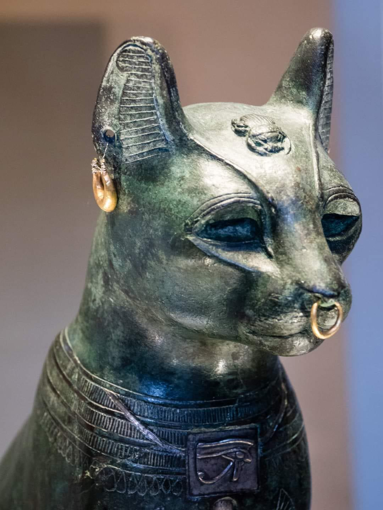

Where were cats first domesticated?

We didn't domesticate cats, they did it themselves
Cats were first domesticated in the Middle East around 10,000 to 12,000 years ago in a place called the Fertile Crescent. What is unique about the domestication of cats is that it was a mutual decision by both parts. In fact, a lot of scientists argue that cats domesticated themselves. They were beneficial to us because they were efficient at catching mice and other little rodents. They liked us because of our garbage and food scraps that were lying around for the taking. A common example of both sides benefiting from this relationship is when cats tagged along on the Mayflower. They came along to help protect the food from the rodents. Another example of cat and human relationships is Ancient Egypt. When people think of ancient cats, their mind often goes to the cats of Ancient Egypt. It is commonly thought that the Egyptians worshipped cats as gods.
How that affects us today
- Ever since then cats have become a favorite pet of America and around the world. We've adopted them into our everday life. For a lot of people they are dear friends that have a permanent place in their hearts.
- 1. Abyssinian
- 2. Bengal
- 3. Maine Coon
- 4. Norwegian Forest
- 5. Selkirk
- 6. Ragdoll
- 7. Bombay
- 8. Himalayan